Key Advantages
The Zorin Baccarat Display was designed specifically for live casino environments where readability, reliability and operational flexibility are critical.
Exceptional Road Readability
Large, carefully balanced roads ensure that patterns remain clearly visible from across the table.
Clear Game Result Display
The winning result appears prominently in the center before animating into the Bead Road.
Multiple Layout Options
Modern, Classic and Traditional layouts allow casinos to match player expectations and local habits.
Professional Color Themes
Ten carefully designed themes optimized for readability in different casino interiors and lighting conditions.
Seamless System Integration
Manual input, smart shoes, video recognition systems and open API support enable seamless casino integration.
Custom Feature Support
Custom features such as side bets, progressive jackpots and casino-specific display elements
can be added to meet operator requirements.
Modern Layout Optimized for Baccarat
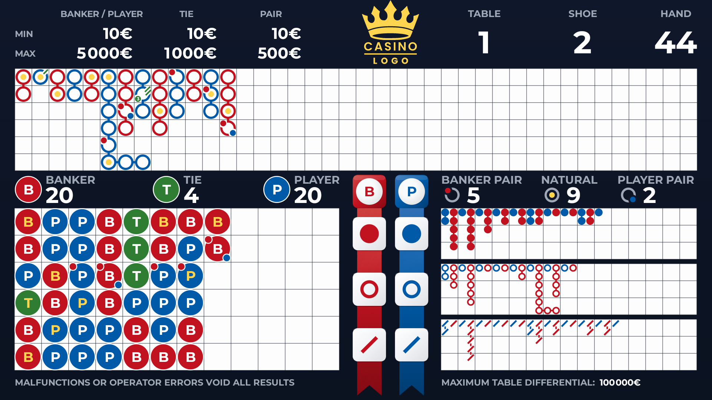
Layout Structure
- Large Big Road positioned at the top
- Bead Road placed in the lower left area
- Derived Roads grouped on the lower right
- Prediction Board prominently placed in the center
- Game result displayed prominently above all elements
Player Readability
The Modern Layout was designed specifically for baccarat players who rely on instant recognition of roads, trends and outcomes.
It prioritizes the most important information while preserving a clean visual hierarchy and strong readability on large displays.
Big Road First
Top priority visual placement
Central Prediction
More visible than typical displays
Distance Readability
Clear from across the table
Pixel Perfect
Consistent spacing and rendering
Flexible Layout Options
The system offers multiple layout styles to match player expectations, casino preferences and regional habits.
Modern
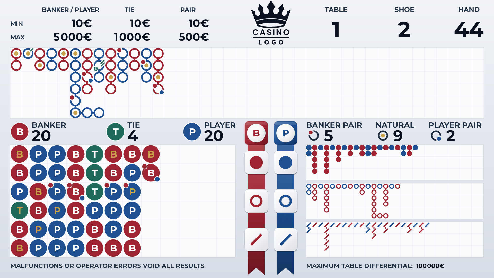
Optimized layout developed specifically for clarity and readability.
Our Signature Layout
Modern is the signature Zorin Displays layout and the primary visual format of the system.
It was developed with direct attention to the preferences of experienced baccarat players,
with a strong focus on hierarchy, balance and immediate road recognition.
Special attention was given to the central Prediction Board. While many displays treat this
element as secondary, our layout places it at the center and gives it clear visual emphasis,
making it easier to read and more valuable for active players.
At the same time, we understand that some casinos prefer more familiar arrangements,
which is why additional layout options are also available.
Color Themes
The display includes ten professionally designed themes inspired by casino interiors and regional preferences.
All examples below use the same Modern Layout for direct visual comparison.
Each theme preserves the same layout while adapting the visual style to different casino interiors and lighting conditions.
Beech Theme
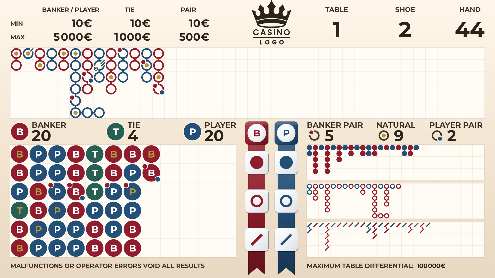
Warm neutral tones inspired by traditional baccarat scoreboards.
Ideal for casinos that prefer a classic table atmosphere.
Gold Theme
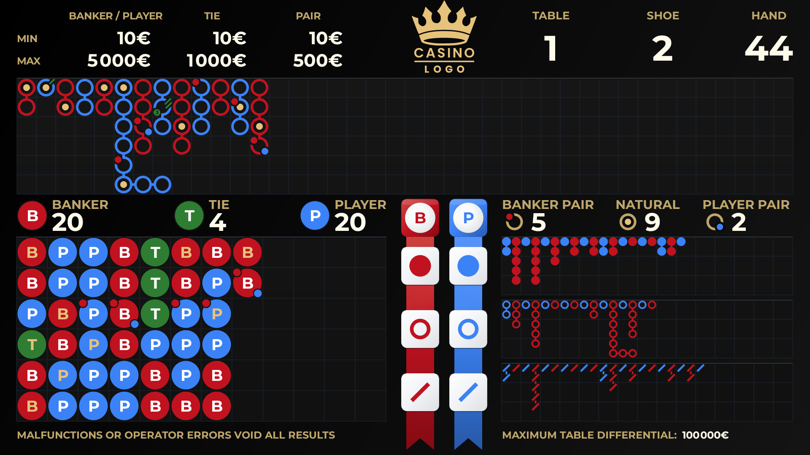
Dark premium theme with gold accents designed for elegant casino interiors.
Silk Theme
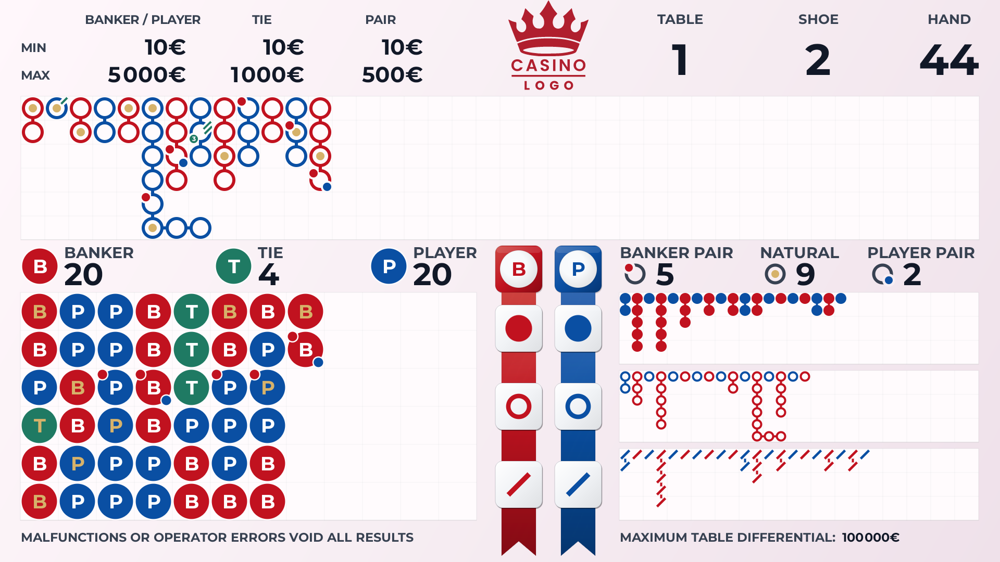
Light elegant theme with refined tones suited for modern casino interiors.
Emerald Theme
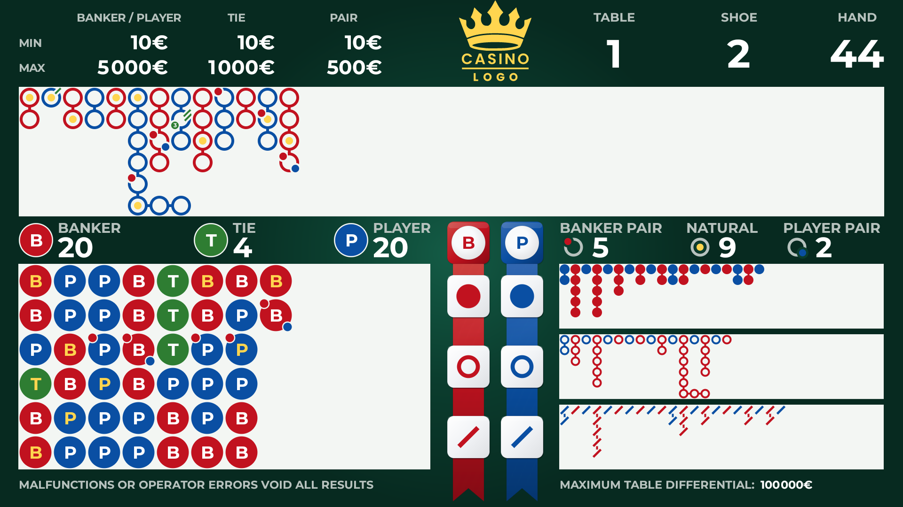
Emerald green casino-inspired theme that blends naturally with traditional table felt.
Ivory Theme
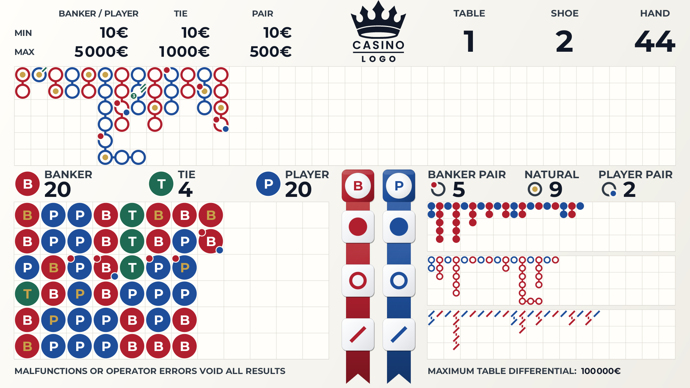
Bright and clean light theme designed for maximum readability in well-lit rooms.
Obsidian Theme
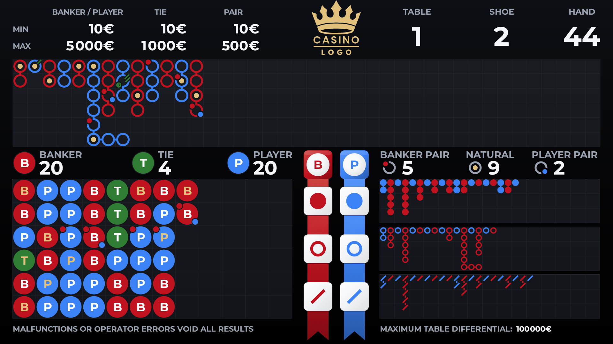
Minimal dark theme focused on contrast, clarity and distraction-free gameplay.
Porcelain Theme
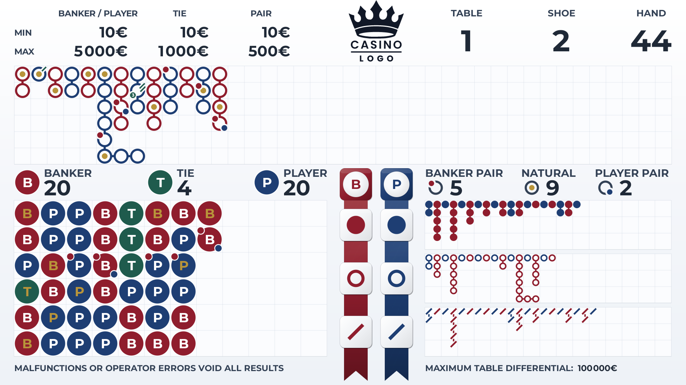
Soft neutral palette inspired by classic casino signage and scoreboards.
Ruby Theme
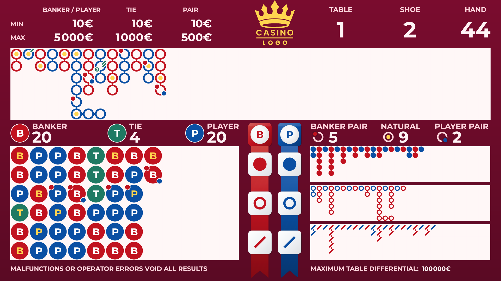
Deep red palette delivering strong contrast and excellent road visibility.
Titan Theme

High-contrast professional theme designed for maximum visibility on large displays.
Custom themes can be developed to match your casino branding, table design or corporate identity.
System Integration and Table Management
Wireless Dealer Keypad
The system supports fast and convenient manual input through a dedicated wireless keypad designed specifically for baccarat tables.
The interface is optimized to minimize dealer actions while maintaining quick and accurate result entry.
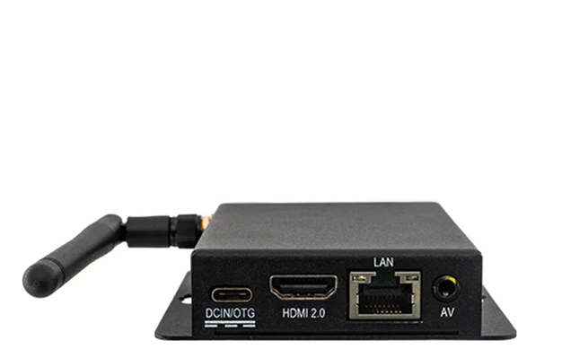
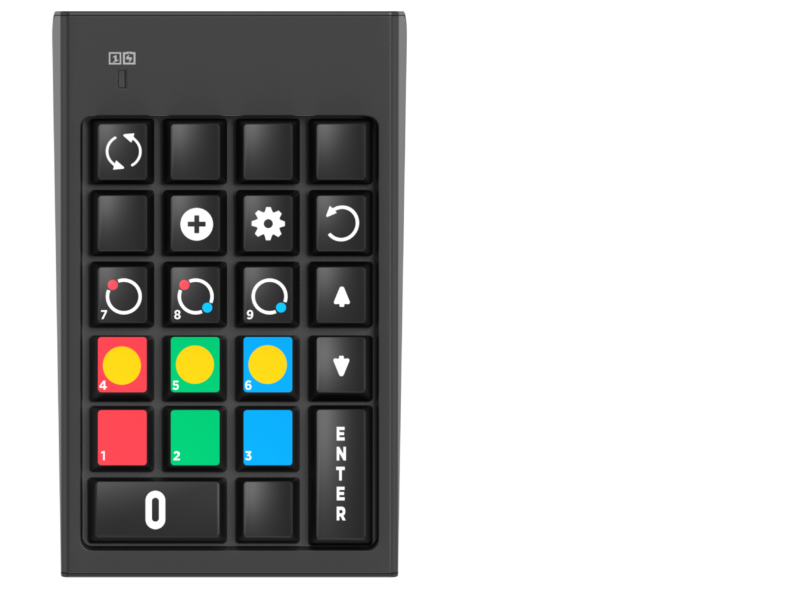
System Integration
- Manual keypad input
- iShoe support (Light & Wonder)
- Smart Shoe compatibility
- Video recognition systems
- Open API integration
Compact Hardware Setup
A compact controller is mounted directly behind the display and can be powered from the monitor itself.
The system runs on an Android-based platform with Wi-Fi connectivity, enabling flexible installation with minimal cabling.
Fast system startup ensures the display returns to operation quickly after power interruptions.
Designed for reliable day-to-day casino operations with minimal dealer interaction
and flexible integration with existing table systems.
Table Management
- Extended table limits display with differential indicator
- Configurable table number display
- Configurable shoe and hand numbering
- Instant result correction (Undo)
- Table closed status display
- Shoe history with replay mode
- Demo mode for testing and demonstrations
- Software updates via internet or local network
Player-Centered Layout • Precision Road Rendering • Extensible Display Platform